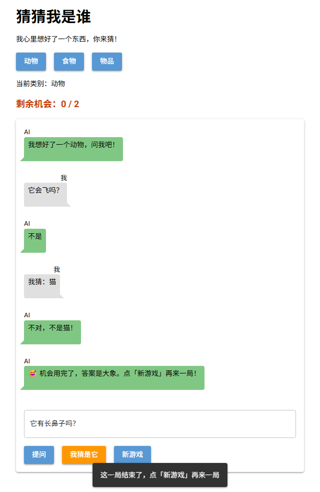

第 8 课任务
完成「猜猜我是谁」
AI 已经能守规矩地回答问题了。最后一课把游戏补完整：提问也要用掉一次机会；等 AI 回答时显示"AI 正在想…"，网页不再卡住；不能在 AI 还没回答时重复提问；猜对了按用掉的次数给一个称号。

完成后的游戏：问了 3 个问题，第 4 次猜对，获得称号"小侦探"（真实运行截图）
| 步骤 | 做什么 | 新学的代码 |
|---|---|---|
| 第 1 步 | 提问和猜错都扣机会 | 函数 use_one |
| 第 2 步 | 显示"AI 正在想…"，网页不卡 | async / await |
| 第 3 步 | 防止重复提问，按回车也能提问 | game["busy"]、box.on |
| 第 4 步 | 猜对后给称号 | 函数 title_for |
| 第 5 步 | 排错 | 常见错误 |
第 1 步 · 扣机会
把"用掉一次机会"写成函数
按游戏规则，每问一个问题、每猜错一次，都要用掉一次机会。两个地方都要用，所以写成一个函数：
def use_one():
game["left"] = game["left"] - 1
show_left()
if game["left"] == 0:
game["over"] = True
say(False, f"😅 机会用完了，答案是{game['secret']}。点「新游戏」再来一局！")ask 里 AI 回答之后调用一次；guess 里猜错时调用一次（原来写在 guess 里的扣机会代码就可以删掉了）：
say(False, answer)
use_one() else:
say(False, f"不对，不是{g}！")
use_one()
把 MAX_TRIES 临时改成 2 测试：问一次、猜错一次，机会用完；再提问会弹出提示
use_one：不是玩家的错，不扣机会。Q1一共 10 次机会。玩家问了 3 个问题，猜错 1 次，又有一次提问时网络断了（出现了 ⚠️ 提示）。现在剩几次？
第 2 步 · 网页不卡
为什么"AI 正在想…"不显示
先加一个文本组件 status，调用 AI 前显示"AI 正在想…"，拿到回答后清空：
status.text = "AI 正在想…"
raw = ask_ai(game["history"])
...
status.text = ""我用程序在点击后每隔一段时间检查一次网页：等 AI 的那一秒里，网页上始终没有出现"AI 正在想…"，连自己的问题气泡也是和 AI 的回答同时出现的。
难点：普通函数在等 AI 时，网页没法更新
NiceGUI 同一时间只能做一件事。ask_ai 在等服务器回答时，NiceGUI 一直被占着，没空把新的文字发给浏览器。等它空下来，status 已经被清空了，所以玩家什么也看不到。这就是第 5 课提到的"网页停顿一两秒"。
第 2 步 · 网页不卡
async / await：一边等，一边更新网页
| 代码 | 作用 | 英文意思 |
|---|---|---|
from nicegui import run, ui | 多导入一个 run | |
async def ask(): | 把 ask 变成异步函数，它可以在中途暂停等待 | async = 异步 |
run.io_bound(ask_ai, game["history"]) | 把 ask_ai 交给后台去执行，参数写在后面 | io bound = 等待输入输出 |
await ... | 在这里等后台的结果；等待期间 NiceGUI 可以去更新网页 | await = 等待 |
async def ask():
...
status.text = "AI 正在想…"
try:
raw = await run.io_bound(ask_ai, game["history"])
...
status.text = ""改完再用同样的方法测试：点击后"AI 正在想…"马上出现，AI 回答到了就消失。
run.io_bound(ask_ai, game["history"]) 里的 ask_ai 后面没有括号：和 on_click=ask 一样，是把函数交出去，让后台去调用。Q2改成 async 之后，为什么"AI 正在想…"就能显示了？
第 3 步 · 防止重复提问
game["busy"] 和回车提问
网页不卡了，新问题也来了：AI 还没回答时，玩家可以再点一次"提问"，两个问题同时发出去，对话记录就乱了。用 game["busy"] 记录"AI 是不是正在回答"：
game = {..., "busy": False, "history": []}
async def ask():
q = box.value
if game["over"]:
ui.notify("这一局结束了，点「新游戏」再来一局")
elif game["busy"]:
ui.notify("AI 还在想，请稍等")
elif q == "":
ui.notify("请先输入问题")
else:
...
game["busy"] = True
status.text = "AI 正在想…"
try:
...
except Exception as e:
...
game["busy"] = False
status.text = ""再让输入框按回车也能提问：
| 代码 | 作用 |
|---|---|
box.on("keydown.enter", ask) | 在输入框里按下回车键时，执行 ask（keydown = 按下键） |
测试：AI 回答前连点两次"提问"，只发出了一个问题；第二个问题用回车发送，也正常
Q3如果把 game["busy"] = False 写进了 try 里面（放在 use_one() 后面），而不是 try / except 的后面，会出什么问题？
第 4 步 · 称号
猜对后按次数给称号
def title_for(used):
if used <= 3:
return "🧠 读心大师"
elif used <= 6:
return "🔍 小侦探"
else:
return "🐢 坚持到底"猜对时，用掉的次数 = 已经扣掉的次数 + 这次猜对的 1 次：
if g == game["secret"]:
game["over"] = True
used = MAX_TRIES - game["left"] + 1
say(False, f"🎉 猜对了！就是{game['secret']}！你用了 {used} 次机会，获得称号：{title_for(used)}")到这里，整个游戏就完成了：
import random
from nicegui import run, ui
from openai import OpenAI
API_KEY = "在这里粘贴你的 key"
client = OpenAI(api_key=API_KEY, base_url="https://api.siliconflow.cn/v1")
MODEL = "Qwen/Qwen2.5-7B-Instruct"
MAX_TRIES = 10
SECRETS = {
"动物": ["企鹅", "大象", "猫", "鲨鱼", "蜜蜂"],
"食物": ["披萨", "香蕉", "冰淇淋", "饺子", "鸡蛋"],
"物品": ["雨伞", "手机", "自行车", "吉他", "时钟"],
}
game = {"category": "动物", "secret": "", "left": MAX_TRIES, "over": False, "busy": False, "history": []}
def make_rules(secret):
return (
f"我们在玩猜谜游戏。谜底是：{secret}。\n"
"玩家会问“是不是”的问题来猜谜底。请根据谜底的真实情况，如实回答。\n"
"规则：\n"
"1. 只能回答这三个词之一：是、不是、不确定。\n"
"2. 不许说出谜底，也不许给任何提示。\n"
"3. 如果玩家问的不是“是不是”的问题，回答：不确定。\n"
"例子（假设谜底是：狗）：\n"
"问：它有四条腿吗？ 答：是\n"
"问：它会飞吗？ 答：不是\n"
"问：它叫什么？ 答：不确定"
)
def to_answer(text, secret):
text = text.strip()
if secret in text:
return "不确定"
if text.startswith("不确定"):
return "不确定"
if text.startswith("是"):
return "是"
if text.startswith("不"):
return "不是"
return "不确定"
def ask_ai(history):
response = client.chat.completions.create(model=MODEL, messages=history, temperature=0)
return response.choices[0].message.content
def say(mine, text):
with chat:
if mine:
ui.chat_message(text, name="我", sent=True)
else:
ui.chat_message(text, name="AI")
def show_left():
left_label.text = f"剩余机会：{game['left']} / {MAX_TRIES}"
def title_for(used):
if used <= 3:
return "🧠 读心大师"
elif used <= 6:
return "🔍 小侦探"
else:
return "🐢 坚持到底"
def use_one():
game["left"] = game["left"] - 1
show_left()
if game["left"] == 0:
game["over"] = True
say(False, f"😅 机会用完了，答案是{game['secret']}。点「新游戏」再来一局！")
def new_game():
game["secret"] = random.choice(SECRETS[game["category"]])
game["left"] = MAX_TRIES
game["over"] = False
game["history"] = [{"role": "system", "content": make_rules(game["secret"])}]
chat.clear()
show_left()
say(False, f"我想好了一个{game['category']}，问我吧！")
def choose(e):
game["category"] = e.sender.text
category.text = f"当前类别：{game['category']}"
new_game()
async def ask():
q = box.value
if game["over"]:
ui.notify("这一局结束了，点「新游戏」再来一局")
elif game["busy"]:
ui.notify("AI 还在想，请稍等")
elif q == "":
ui.notify("请先输入问题")
else:
say(True, q)
box.value = ""
game["history"].append({"role": "user", "content": q})
game["busy"] = True
status.text = "AI 正在想…"
try:
raw = await run.io_bound(ask_ai, game["history"])
answer = to_answer(raw, game["secret"])
game["history"].append({"role": "assistant", "content": answer})
say(False, answer)
use_one()
except Exception as e:
game["history"].pop()
say(False, f"⚠️ 连接 AI 出错了（{type(e).__name__}），这次不扣机会。检查一下 key 和网络再试。")
game["busy"] = False
status.text = ""
def guess():
g = box.value
if game["over"]:
ui.notify("这一局结束了，点「新游戏」再来一局")
elif g == "":
ui.notify("请先输入你猜的东西")
else:
say(True, f"我猜：{g}")
box.value = ""
if g == game["secret"]:
game["over"] = True
used = MAX_TRIES - game["left"] + 1
say(False, f"🎉 猜对了！就是{game['secret']}！你用了 {used} 次机会，获得称号：{title_for(used)}")
else:
say(False, f"不对，不是{g}！")
use_one()
with ui.column().classes("w-full max-w-xl mx-auto"):
ui.label("猜猜我是谁").classes("text-3xl font-bold")
ui.label("我心里想好了一个东西，你来猜！")
with ui.row():
for c in SECRETS:
ui.button(c, on_click=choose)
category = ui.label("当前类别：动物")
left_label = ui.label("").classes("text-lg font-bold text-orange-700")
with ui.card().classes("w-full"):
chat = ui.column().classes("w-full")
status = ui.label("").classes("text-sm text-gray-500")
box = ui.input(placeholder="输入问题，例如：它会飞吗？").classes("w-full").props("outlined")
box.on("keydown.enter", ask)
with ui.row():
ui.button("提问", on_click=ask)
ui.button("我猜是它", on_click=guess).props("color=orange")
ui.button("新游戏", on_click=new_game)
new_game()
ui.run()Q4玩家问了 6 个问题，第 7 次直接猜对了。他得到什么称号？
第 5 步 · 排错
Q5运行时报错，问题出在哪里？
raw = await run.io_bound(ask_ai, game["history"])
^^^^^^^^^^^^^^^^^^^^^^^^^^^^^^^^^^^^^^^^^^^
SyntaxError: 'await' outside async function第 5 步 · 排错
Q6游戏做好了，小明想发给同学玩。发之前最重要的一件事是什么？
🏆
「猜猜我是谁」完成！
你从一个空白网页开始，亲手写出了一个接入 AI 的完整游戏。本课选择题一次答对 0 / 0。
| 课 | 游戏多了什么 | 核心知识 |
|---|---|---|
| 1 | 标题、按钮、输入框 | 组件、ui.run() |
| 2 | 按钮能点了 | 事件、.value、.text |
| 3 | 布局和聊天气泡 | 容器、样式 |
| 4 | 谜底、机会、输赢 | 字典、random |
| 5 | AI 能回答了 | API、API Key |
| 6 | AI 记住对话、知道谜底 | 对话记录、system 消息 |
| 7 | AI 守规矩 | 提示词、检查 AI 输出、try |
| 8 | 完整的游戏 | async / await |
接下来可以自己改
这是你的游戏了。可以试试：在 SECRETS 里加你喜欢的类别（游戏角色、城市、明星）；改称号和规则；加一个"提示"按钮，花 2 次机会让 AI 说出谜底的一个特点（想想要怎么改提示词）；把界面换成你喜欢的颜色。